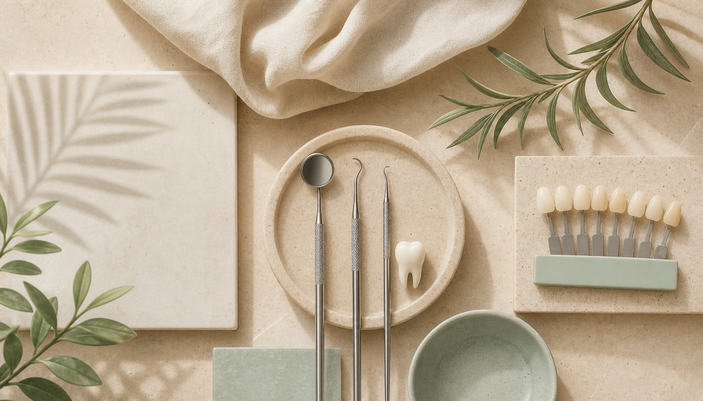

Cosmetic Dentistry
Thoughtful smile improvements planned around harmony, proportion, and long-term tooth health.
Services
The best dentistry is the least dentistry. Every service begins with a careful diagnosis, a clear explanation, and a plan that respects healthy tooth structure.

Thoughtful smile improvements planned around harmony, proportion, and long-term tooth health.
Durable restorative care supported by a 60-month warranty on qualifying treatment.
Prompt guidance for urgent pain, broken teeth, or sudden dental concerns.
Modern imaging with minimal x-ray exposure for safer treatment planning.
Recommendations that prioritize preserving natural tooth structure whenever possible.
Complimentary consultations that help you understand your options before making a decision.
A lasting result begins with careful design, precise treatment, and follow-up support.